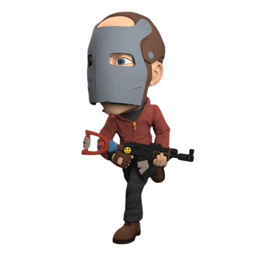

RUST SERVIDORES
RUST V25
Servidor exclusivo no launcher com sistema antihacker.
Ao abrir o launcher, localize o servidor Nostalgia Rust,
pronto para ser acessado ao clicar em "PLAY GAME".
RUST V1381
Após iniciar o LumaGameLauncher_x64,
pressione F1, cole o IP a seguir e pressione Enter.
IP: connect nostalgia-rust.duckdns.org:28015
